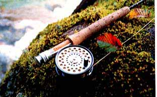

Photo Gallery
Fly Rods and Reels

Fates #4 and Hardy Featherweight
I have been using a fly rod which made by the Tenryu fishing rod company for 8 years. It is 8'6" in length, and designed for #4 line. The action of the rod is flexible and it has enough power on its but section. I can fight with 60 cm over carp with this rod. It works very well. I have used a fly reel, the Featherweight made by Hardy, for 9 years. I like the shape and form of the fly reel. I bought it after I had gotten an own income. The reel reminds me my school days because I could not buy such expensive fishing tackle until I became an engineer.
Photo Gallery Contents
Home